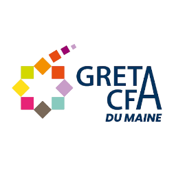
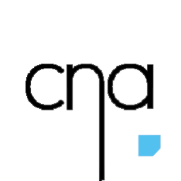

2024 - 2026 : Formation BTS CIEL - Le Mans
Lycée Touchard Washington
Projet Travaillé : Ballon Stratosphérique
Février 2026 : Stage en informatique GRETA CFA - Le Mans
Développement d'une application web interne permettant la
visualisation et la modification des Actions de Formation

Juin 2025 : Stage en informatique Entreprise SCM – Arnage
Développement d'une application web interne permettant la
gestion des Interventions Off-Shore
2023 - 2024 : Baccalauréat Général - Le Mans
Lycée Touchard Washington
Spécialités NSI et Mathématiques
Début 2020 : Stage d'observation Entreprise Cegefos - Le Mans
Observation de la partie développement
Observation de la partie gestion
Observation de la partie clients
